hexo是一款基于Node.js的静态博客框架。速度快，撰写方便，扩展性高。
注意事项
不要用中文输入法的符号 要开启文件扩展名的显示
参考资料
环境准备
安装git
首先打开git安装包 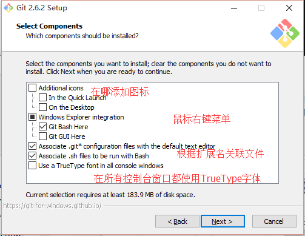 按照自己需求选择组件 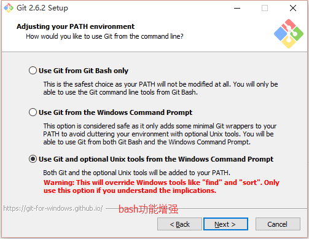 选择命令行的风格 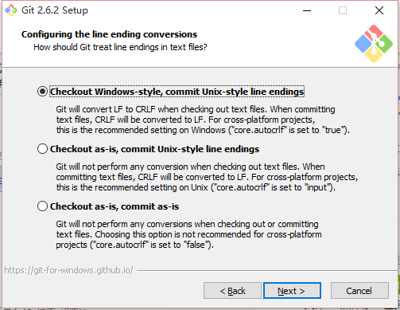 选择文本的结束符,参考 CRLF和LF 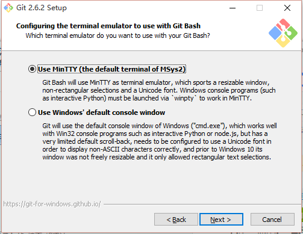 使用MinTTY作为终端 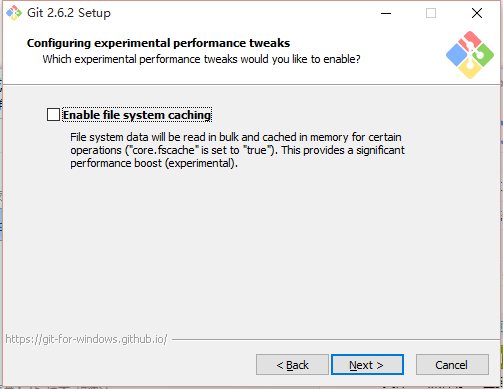 开启系统缓存，解决运行缓慢的问题
配置NodeJS环境变量
请使用4.x.x版本,5.x.x会出错
在CMD执行npm -v,如果如下显示，则说明环境变量配置成功，反之则需要重新配置环境变量
 下载安装nodejs,找到nodejs安装目录
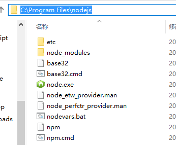
我这里是
下载安装nodejs,找到nodejs安装目录
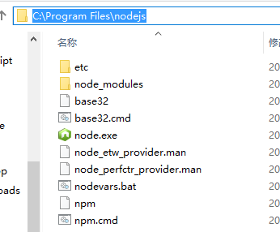
我这里是C:Program Filesnodejs
右键我的电脑，属性，高级，环境变量
找到系统变量的Path，点击编辑，先看看有没有nodejs的路径
如果没有，加上;C:Program Filesnodejs
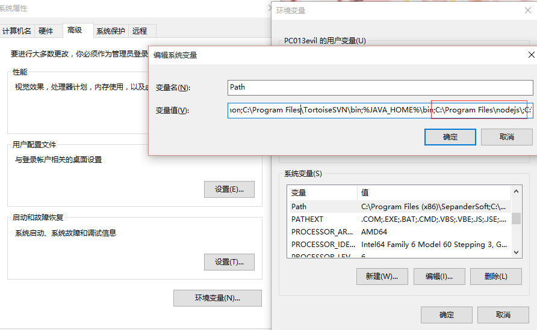
注册Gitcafe账号
在username输入一个你喜欢的英文名 注册完后可以看到用户控制面板，点击配置SSH Public Key 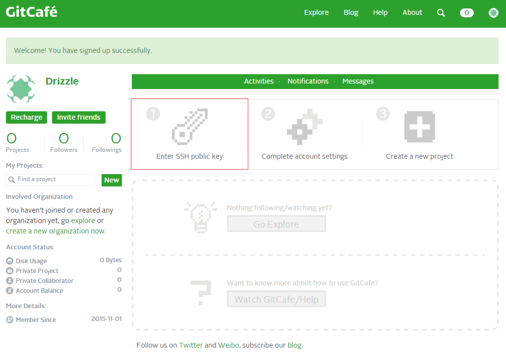 我们按照第一步，配置SSH公钥 先在桌面点击右键，选择Git Bash Here，执行下面这条命令，后面是你注册的邮箱：
ssh-keygen -t rsa -C "root@gorgiaxx.com" -f ~/.ssh/gitcafe
会提示输入密码，输入路两遍密码后，SSH密钥就生成成功了
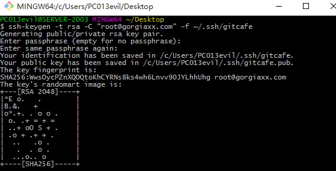
接下来到用户目录下的.ssh文件夹C:UsersPC013evil.sshPC013evil是我的Windows的用户名。
新建一个无扩展名的文本文件名字为config，里面输入：
Host gitcafe.com www.gitcafe.com
IdentityFile ~/.ssh/gitcafe
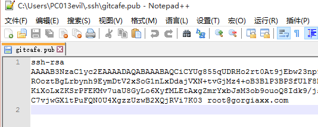
切换到Gitcafe的页面https://gitcafe.com/account/public_keys/new
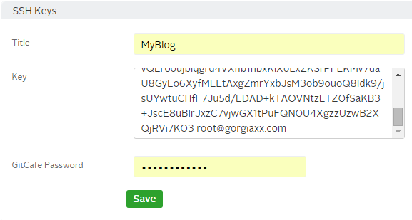
标题随便起一个，Key就填写gitcafe.pub里的内容，密码填写之前配置SSH公钥的密码
接着到终端里测试下是否成功，会提示输入密码：
ssh -vT git@gitcafe.com
然后到用户控制面板，点Create a new projecthttps://gitcafe.com/projects/new
Project name与用户名相同，点击创建
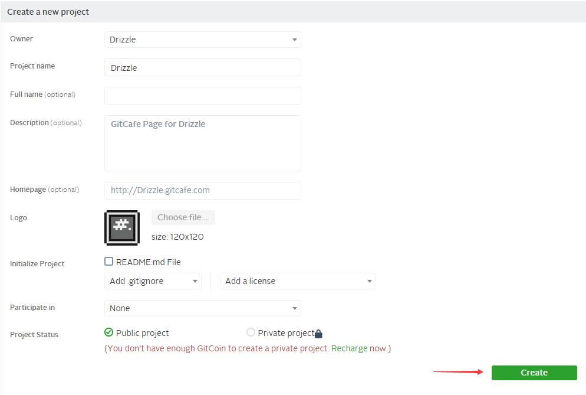
接下来选择右边的SSH，复制链接git@gitcafe.com:Drizzle/Drizzle.git
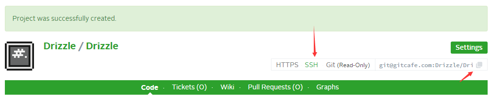
安装配置hexo
在管理员模式下的CMD执行：
npm install -g hexo-cli
-g是参数，表示全局安装hexo，这样你在任何路径都能执行hexo命令。cli代表command-line interface，命令行界面的意思。
Tips:如果安装过程缓慢，可以使用淘宝镜像
npm install -g cnpm --registry=https://registry.npm.taobao.org
然后每次使用都在npm前面加上c
cnpm install -g hexo-cli
新建一个文件夹，在里面右键Git Bash Here，弹出MINGW的终端 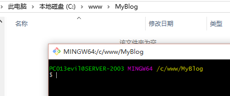 在此文件夹初始化hexo
hexo init
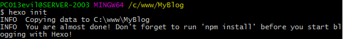 初始化hexo后，提示执行
npm install
可以看到已经生成了一些文件 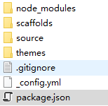
.
├── _config.yml hexo配置文件
├── package.json 依赖包列表
├── node_modules nodejs模块目录
├── scaffolds 工具模板目录
├── scripts 功能增强脚本
├── source 博客内容文件
| ├── _drafts 草稿目录
| └── _posts 文章目录
└── themes 主题目录
现在用编辑器打开_config.yml，找到最下面的deploy，不要忘记每个冒号后面都有空格。 这些内容的填写在官网都有说明，部署类型git，repo是远程仓库，填写之前复制的内容。
deploy:
type: git
repo: git@gitcafe.com:Drizzle/Drizzle.git
要用git方式部署hexo的话，需要安装一个插件，这里提供两种安装方法。 第一种，直接安装，后面加–save安装的同时,将信息写入package.json
npm install hexo-deployer-git --save
第二种，在Package.json里加上这个插件依赖hexo-deployer-git
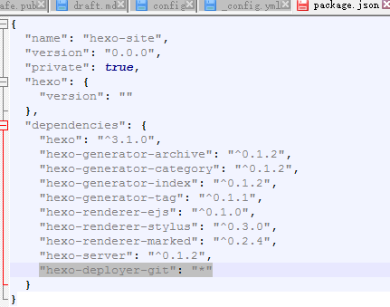
然后执行
npm install
这里使用第一种，安装完成 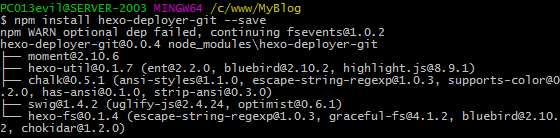 接下来预览一下博客 输入
hexo server -i 127.0.0.1 -p 80
浏览器打开http://127.0.0.1，成功访问
 每次要预览加参数很麻烦，可以到nodejs模块目录修改配置
每次要预览加参数很麻烦，可以到nodejs模块目录修改配置
./node_modules/hexo-server/index.js
修改为：
hexo.config.server = assign({
port: 80,
log: false,
ip: '127.0.0.1'
}, hexo.config.server);
接下来预览就不用加参数了。hexo的命令可以简化,server可以用s表示
hexo s
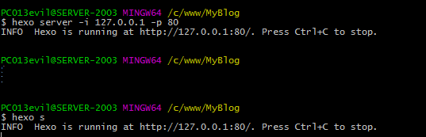
测试成功之后我们生成静态文件，生成后在./public里，准备部署
hexo generate
也可以用
hexo g
生成之后，开始部署
hexo deploy
也可以用
hexo d
提示这个，是远端服务器ssh配置问题，我们不管，填yes，然后输入密码
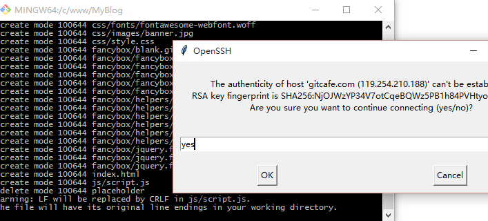
部署成功
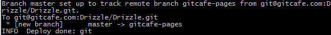
现在打开 http://drizzle.gitcafe.io/
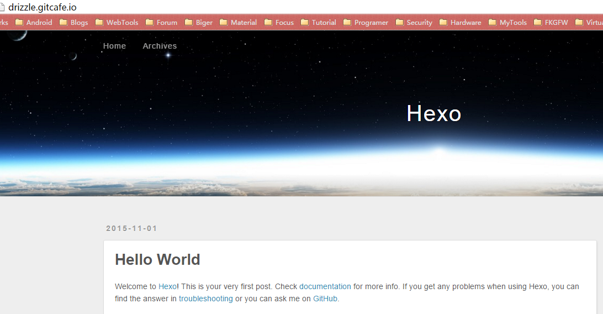
写博客
执行hexo n "title",新建一篇以title为标题的空文章。
$ hexo n "title"
INFO Created: C:wwwMyBlogsource_poststitle.md
可以看到生成了一个title.md，博客内容是用markdown语法写的。可以使用sublime的插件，也可以在线编辑，还有专门的编辑器
Git工具的简单使用
有的时候因为git工具版本问题，执行deploy后，不能成功部署，这时候我们就要手动部署 在./.deploy_git文件夹里面就是git的工程目录，关于git，可以到廖雪峰的博客学习git教程 在此文件夹右键Git Bash Here 我们先添加远程仓库
git remote add origin git@gitcafe.com:Drizzle/Drizzle.git
先将远端所有文件取回到本地，解决一些冲突问题
git fetch --all
回显，已经把分支给更新了
$ git fetch --all
Fetching origin
Enter passphrase for key '/c/Users/PC013evil/.ssh/gitcafe':
From gitcafe.com:Drizzle/Drizzle
* [new branch] gitcafe-pages -> origin/gitcafe-pages
切换到gitcafe-pages分支
git branch gitcafe-pages
不做任何合并处理，将HEAD指向刚从远程仓库同步下来的版本
git reset --hard origin/gitcafe-pages
回显
$ git reset --hard origin/gitcafe-pages
HEAD is now at d202356 Site updated: 2015-11-01 14:22:41
比如我要修改index.html的标题的内容
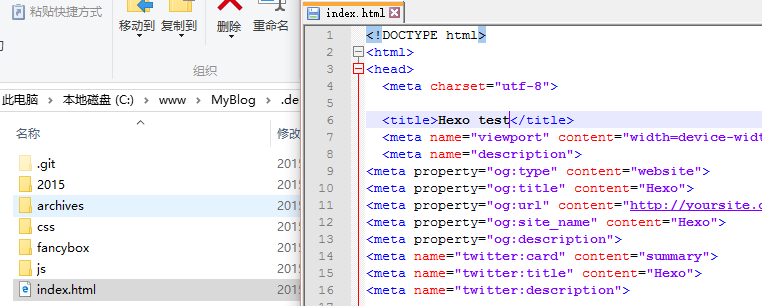
保存，执行git add ./
$ git add ./
warning: LF will be replaced by CRLF in index.html.
The file will have its original line endings in your working directory.
提交到本地仓库，-m表示注释
$ git commit -m "test"
[master warning: LF will be replaced by CRLF in index.html.
The file will have its original line endings in your working directory.
bf2c13f] test
warning: LF will be replaced by CRLF in index.html.
The file will have its original line endings in your working directory.
1 file changed, 1 insertion(+), 1 deletion(-)
最后提交到远端仓库
$ git push -u origin gitcafe-pages
Enter passphrase for key '/c/Users/PC013evil/.ssh/gitcafe':
Counting objects: 3, done.
Delta compression using up to 4 threads.
Compressing objects: 100% (3/3), done.
Writing objects: 100% (3/3), 280 bytes | 0 bytes/s, done.
Total 3 (delta 2), reused 0 (delta 0)
To git@gitcafe.com:Drizzle/Drizzle.git
d202356..bf2c13f gitcafe-pages -> gitcafe-pages
Branch gitcafe-pages set up to track remote branch gitcafe-pages from origin.
刷新页面 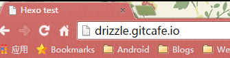 标题已经改变